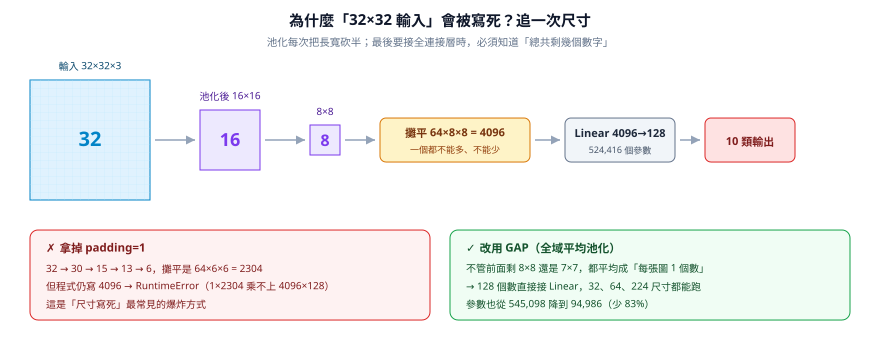
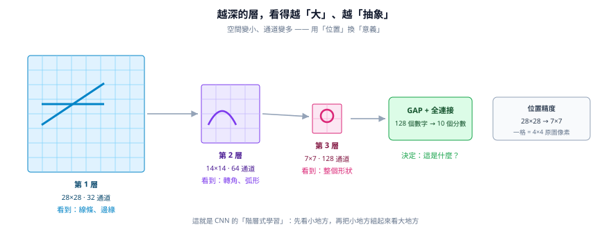
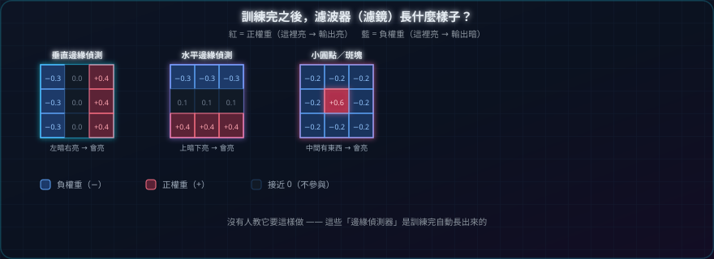
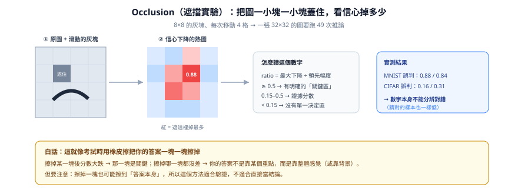
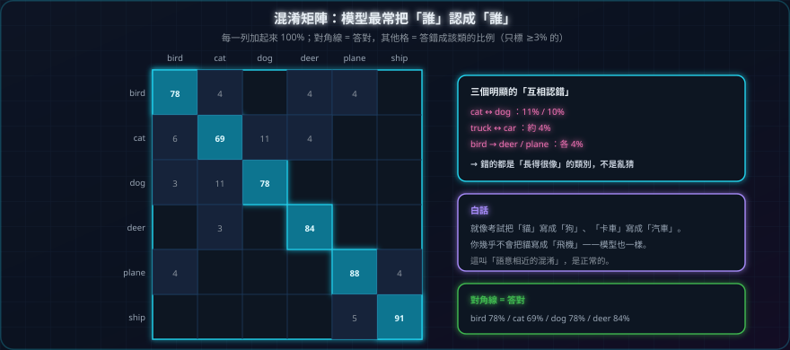
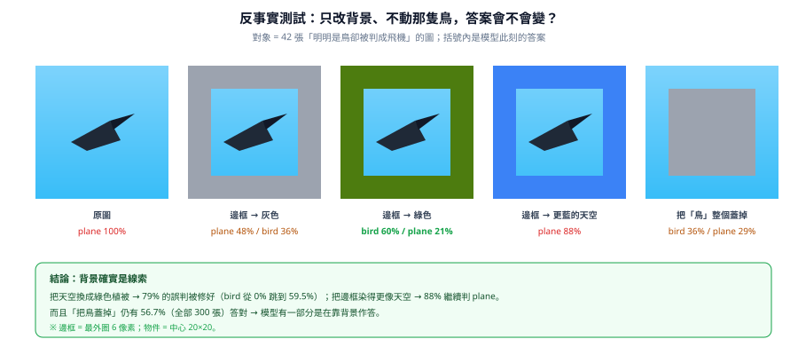

CNN 專題：十個實驗，和三次被推翻的假設
從「濾波器到底在看什麼」，一路追問到「模型是不是靠背景作弊」。
這份專題不教你把準確率推到 99%。它記錄的是一連串追問、驗證、然後發現自己想錯的過程：我們懷疑模型靠天空認飛機，最後證實是真的——但三次試圖治好它的處方，全部失敗。
TL;DR — 六句話看完
- CNN 的第一層會自動學成邊緣偵測器；越深的層看得越抽象，但位置越不精確。
- 把尺寸寫死（
64*8*8）是最常見的爆炸點；GAP 讓同一份模型能吃 32、64、224 各種尺寸，參數還少 83%。 - Grad-CAM 只能提出假設：7×7 熱點圖放大到 32×32，位置誤差 ±4px，熱點落在天空不代表模型在看天空。
- 高信心錯誤最危險：MNIST 三個信心 96.9–98.9% 的誤判，比信心 27% 但答對的樣本更該處理。
- 反事實實驗給出鐵證：只把背景從天空換成綠色，79% 的「鳥→飛機」誤判被修好；把物件整個蓋掉，仍有 56.7% 答對。
- 但三種資料增強處方全部失敗——各賠約 2 個百分點準確率，目標指標動也不動。診斷對，不代表處方對。
十二章導覽
建議照順序讀：前三章建立直覺，中間四章是「看模型」的各種工具與陷阱，後五章是一場失敗的除錯實錄。
 CHAPTER 01
CHAPTER 01
CNN 到底是什麼
用「放大鏡 + 便當盒 + 大腦」三個比喻，講完卷積、池化、全連接。
開始閱讀 →
CHAPTER 02把課本程式跑起來，然後它炸了
為什麼 64*8*8 會爆？追一次 32→16→8 的尺寸，順便認識 GAP。

CHAPTER 03MNIST：越深的層看得越抽象
28×28 → 14×14 → 7×7，用「空間」換「意義」的實際樣子。
開始閱讀 →
CHAPTER 04把濾波器本人挖出來看
32 個 3×3 權重，居然自動長成各種方向的邊緣偵測器。
開始閱讀 → CHAPTER 05
CHAPTER 05
Grad-CAM：模型看哪裡？
熱點圖怎麼讀，以及它為什麼只能當「假設」不能當「結論」。
開始閱讀 →
CHAPTER 06遮擋實驗：用橡皮擦一塊一塊擦
擦掉哪裡信心掉最多？這個數字能分類錯誤，卻不能偵測錯誤。
開始閱讀 → 98.9% CHAPTER 07錯得最慘的，都是最有自信的
三個 96.9–98.9% 的誤判，告訴你「信心不能用來篩錯」。
開始閱讀 → 19% CHAPTER 08把「誤判」拆成三種
被線索騙、被顏色騙、根本沒想法——三種錯要用三種方法救。
開始閱讀 →
CHAPTER 09換成彩色照片（CIFAR-10）
85.7% 看起來不高，但混淆矩陣告訴你「它錯得很合理」。
開始閱讀 →
CHAPTER 10反事實：只改背景，答案就變了
不動那隻鳥一根羽毛，79% 的誤判就消失了。
開始閱讀 → CHAPTER 11
CHAPTER 11
三次「治療」，全部失敗
診斷對、處方錯：三種增強各賠 2pp，目標錯誤卻沒少。
開始閱讀 → 5 CHAPTER 12總結：五條方法論教訓
哪些話可以說、哪些不能說，一張表收乾淨。
開始閱讀 →